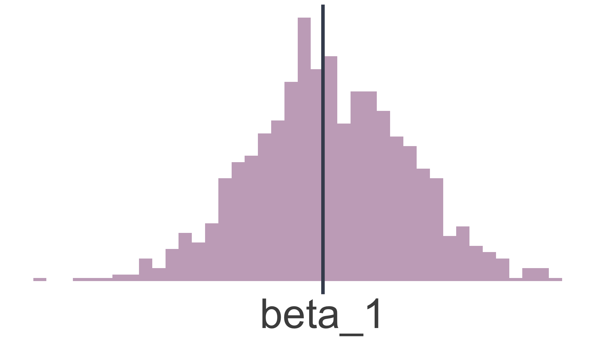
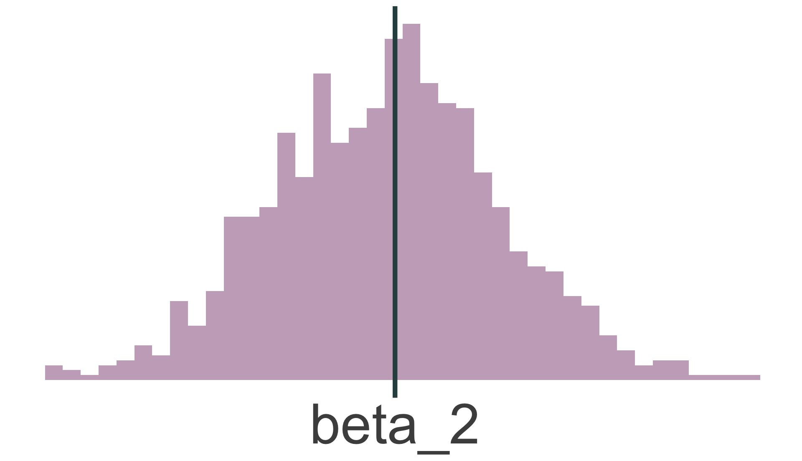
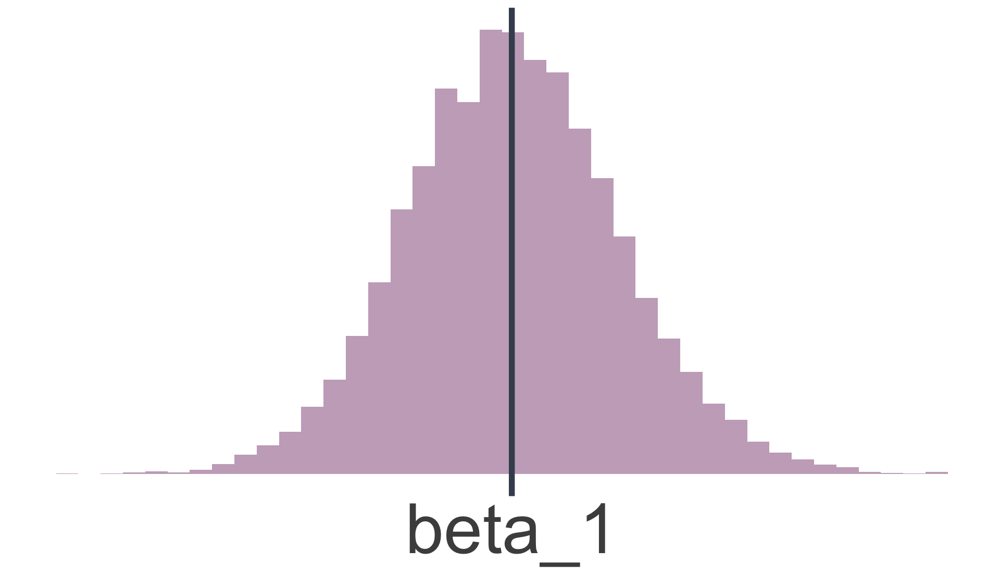
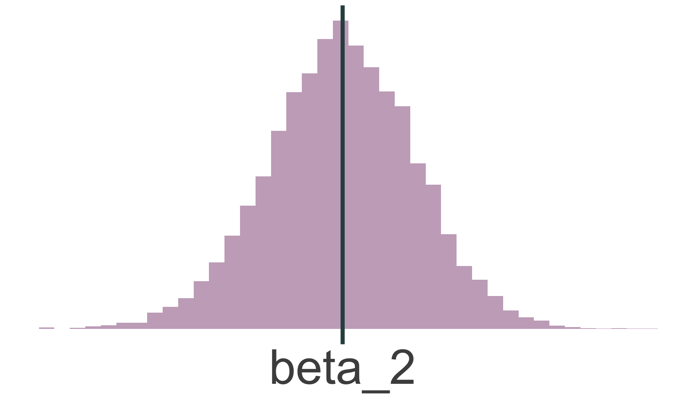
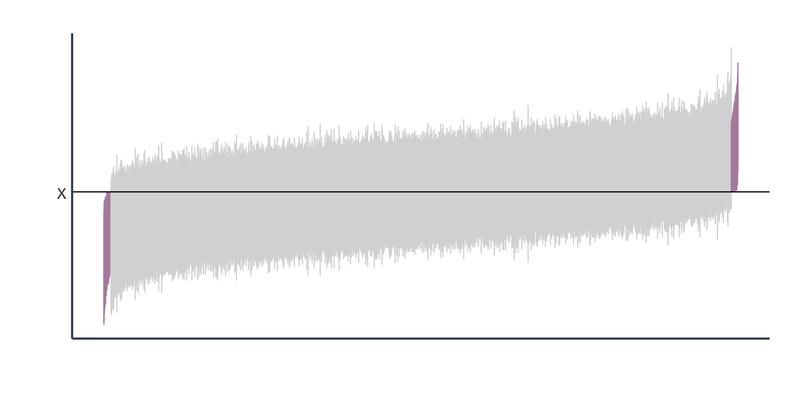

Inference
EC 320, Set 06
Spring 2023
Housekeeping
PS04:
- Will be assigned next week (enjoy the warm weather)
- Due next next Tuesday
LA05:
- Due Friday at 5:00p
Reading: (up to this point)
ItE: R, 1, 2 MM: 1, 2
MT scores
Prologue
OLS
Up to this point, we have been focusing on OLS considering:
- how we model regressions with this estimator
- how the estimator is derived and what properties it demonstrates
- how the classical assumptions make the estimator BLUE
We have mostly ignored drawing conclusions about the true population parameters from the estimates of the sample data. AKA inference.
OLS
Thus far in this class we’ve fit an OLS model the following questions:
- How much does an additional year of schooling increase earnings?
- Does the number of police officers affect campus crime rates?
- Are work training programs helpful at increasing earnings?1
Though we’ve not discussed our confidence in our fitted relationship
Even if all 6 assumptions hold, sample selection might generate the incorrect conclusions in a completely unbiased, coincidental fashion.
Classical Assumptions
A1. Linearity: The population relationship is linear in parameters with an additive error term.
A2. Sample Variation: There is variation in \(X\).
A3. Exogeniety: The \(X\) variable is exogenous
A4. Homoskedasticity: The error term has the same variance for each value of the independent variable
A5. Non-autocorrelation: The values of error terms have independent distributions
A6. Normality: The population error term in normally distributed with mean zero and variance \(\sigma^2\)
Previously we used the first 3 assumptions to show that OLS is unbiased:
\[ \mathop{\mathbb{E}}\left[ \hat{\beta} \right] = \beta \]
We used the first 5 assumptions to derive a formula for the variance of the OLS estimator:
\[ \mathop{\text{Var}}(\hat{\beta}) = \frac{\sigma^2}{\sum_{i=1}^n (X_i - \bar{X})^2} \]
By using the variance of the OLS estimator, we can infer confidence from the sampling distribution
Sampling distribution
The probability distribution of the OLS estimators obtained from repeatedly drawing random samples of the same size from a population and fitting point estimates each time.
Provides information about their variability, accuracy, and precision across different samples.
Point estimates
The fitted values of the OLS estimator (e.g., \(\hat{\beta}_0, \hat{\beta}_1\))
Sampling distribution properties
1. Unbiasedness: If the Gauss-Markov assumptions hold, the OLS estimators are unbiased (i.e., \(E(\hat{\beta}_0) = \beta_0\) and \(E(\hat{\beta}_1) = \beta_1\))
2. Variance: The variance of the OLS estimators describes their dispersion around the true population parameters.
3. Normality: If the errors are normally distributed or the sample size is large enough, by the CLT, the sampling distribution of the OLS estimators will be approximately normal.1
Sampling distribution
The sampling distribution of \(\hat{\beta}\) to conduct hypothesis tests.
Use all 6 classical assumptions to show that OLS is normally distributed:
\[ \hat{\beta} \sim \mathop{N}\left( \beta, \frac{\sigma^2}{\sum_{i=1}^n (X_i - \bar{X})^2} \right) \]
To “prove” this, recall our simulation from last time
Plotting the distributions of the point estimates in a histogram


Simulating 1,000 draws
Plotting the distributions of the point estimates in a histogram


Simulating 10,000 draws
Inference
Inference
Our current workflow:
1. Get data (points with \(X\) and \(Y\) values).
2. Regress \(Y\) on \(X\).
3. Plot the point estimates (i.e., \(\hat{Y_i} = \hat{\beta}_0 + \hat{\beta}_1X_i\)) and report.
But when do we learn something? We are missing a step.
- For \(\hat{\beta}_2\), can we rule out previously hypothesized values?
- How confident should we be in the precision of our estimates?
We need to be careful about our sample being atypical. AKA uncertainty.
However, there is a problem.
Recall the variance of the point estimate \(\hat{\beta_1}\) \[ \mathop{\text{Var}}(\hat{\beta}_1) = \frac{\sigma^2}{\sum_{i=1}^n (X_i - \bar{X})^2} \]
The problem is that \({\color{#ffffff} \sigma^2}\) is unobserved. So what do we do? Estimate it.
Recall the variance of the point estimate \(\hat{\beta_1}\) \[ \mathop{\text{Var}}(\hat{\beta}_1) = \frac{{\color{#BF616A} \sigma^2}}{\sum_{i=1}^n (X_i - \bar{X})^2} \]
The problem is that \({\color{#BF616A} \sigma^2}\) is unobserved. So what do we do? Estimate it.
Estimating error variance
We can estimate the variance of \(u_i\) (\({\color{#BF616A} \sigma^2}\)) using the sum of squared residuals (RSS):
\[ s^2_u = \dfrac{\sum_i \hat{u}_i^2}{n - k} \]
where \(n\) is the number of observations and \(k\) is the number of regression parameters. (In a simple linear regression, \(k=2\).)
If the assumptions from Gauss-Markov hold, then \(s^2_u\) is an unbiased estimator of \(\sigma^2\).
In essence, we are learning from our prediction errors
OLS Variance
With \(s^2_u = \dfrac{\sum_i \hat{u}_i^2}{n - k}\), we can calculate the estimated variance of \(\hat{\beta}_2\)
\[ \mathop{\text{Var}}(\hat{\beta}_2) = \frac{s^2_u}{\sum_{i=1}^n (X_i - \bar{X})^2} \]
Taking the square root, we get the standard error of the OLS estimator:
\[ \mathop{\hat{\text{SE}}} \left( \hat{\beta}_2 \right) = \sqrt{ \frac{s^2_u}{\sum_{i=1}^n (X_i - \bar{X})^2} } \]
The standard error is the standard deviation of the sampling distribution.
Inference
After deriving the distribution of \(\hat{\beta}_2\)1, we have two (related) options for formal statistical inference (learning) about our unknown parameter \(\beta_2\):
- Hypothesis testing: Determine whether there is statistically significant evidence to reject a hypothesized value or range of values.
- Confidence intervals: Use the estimate and its standard error to create an interval that will generally2 contain the true parameter.
Hypothesis testing
Hypothesis Tests
Systematic procedure that gives us evidence to hang our hat on. Starting with a Null hypothesis (H0) and an Alternative hypothesis (HA)
H0: \(\beta_2 = 0\)
HA: \(\beta_2 \neq 0\)
There are four possible outcomes of our test:
1. We fail to reject the null hypothesis and the null is true.
2. We reject the null hypothesis and the null is false.
3. We reject the null hypothesis, but the null is actually true.1
4. We fail to reject the null hypothesis, but the null is actually false.2

Type I vs Type II
Or…

Hypothesis Tests
Goal: Make a statement about \(\beta_2\) using information on \(\hat{\beta}_2\).
\(\hat{\beta}_2\) is random—it could be anything, even if \(\beta_2 = 0\) is true.
- But if \(\beta_2 = 0\) is true, then \(\hat{\beta}_2\) is unlikely to take values far from zero.
- As the standard error shrinks, we are even less likely to observe “extreme” values of \(\hat{\beta}_2\) (assuming \(\beta_2 = 0\)).
Hypothesis testing takes extreme values of \(\hat{\beta}_2\) as evidence against the null hypothesis, but it will weight them by information about variance the estimated variance of \(\hat{\beta}_2\).
Hypothesis Tests
H0: \(\beta_2 = 0\)
HA: \(\beta \neq 0\)
To conduct the test, we calculate a \(t\)-statistic1:
\[ t = \frac{\hat{\beta}_2 - \beta_2^0}{\mathop{\hat{\text{SE}}} \left( \hat{\beta}_2 \right)} \]
Distributed by a \(t\)-distribution with \(n-2\) degrees of freedom2.
Hypothesis Tests
Next, we use the \(\color{#434C5E}{t}\)-statistic to calculate a \(\color{#B48EAD}{p}\)-value.
Describes the probability of seeing a \(\color{#434C5E}{t}\)-statistic as extreme as the one we observe if the null hypothesis is actually true.
But…we still need some benchmark to compare our \(\color{#B48EAD}{p}\)-value against.
Hypothesis Tests
We worry mostly about false positives, so we conduct hypothesis tests based on the probability of making a Type I error1.
How? We select a significance level, \(\color{#434C5E}{\alpha}\), that specifies our tolerance for false positives (i.e., the probability of Type I error we choose to live with).
Hypothesis Tests
We then compare \(\color{#434C5E}{\alpha}\) to the \(\color{#B48EAD}{p}\)-value of our test.
If the \(\color{#B48EAD}{p}\)-value is less than \(\color{#434C5E}{\alpha}\), then we reject the null hypothesis at the \(\color{#434C5E}{\alpha}\cdot100\) percent level.
If the \(\color{#B48EAD}{p}\)-value is greater than \(\color{#434C5E}{\alpha}\), then we fail to reject the null hypothesis at the \(\color{#434C5E}{\alpha}\cdot100\) percent level.1
Hypothesis Tests
Ex. Are campus police associated with campus crime?
# A tibble: 2 × 5
term estimate std.error statistic p.value
<chr> <dbl> <dbl> <dbl> <dbl>
1 (Intercept) 18.4 2.38 7.75 1.06e-11
2 police 1.76 1.30 1.35 1.81e- 1H0: \(\beta_\text{Police} = 0\)
HA: \(\beta_\text{Police} \neq 0\)
Significance level: \(\color{#434C5E}{\alpha} = 0.05\) (i.e., 5 percent test)
Test Condition: Reject H0 if \(p < \alpha\)
What is the \(\color{#B48EAD}{p}\)-value? \(p = 0.18\)
Do we reject the null hypothesis? No.
Hypothesis Tests
\(\color{#B48EAD}{p}\)-values are difficult to calculate by hand.
Alternative: Compare \(\color{#434C5E}{t}\)-statistic to critical values from the \({\color{#434C5E} t}\)-distribution.
Hypothesis Tests
Notation: \(t_{1-\alpha/2, n-2}\) or \(t_\text{crit}\).
- Find in a \(t\)-table using \(\color{#434C5E}{\alpha}\) and \(n-2\) degrees of freedom.
Compare the the critical value to your \(t\)-statistic:
- If \(|t| > |t_{1-\alpha/2, n-2}|\), then reject the null.
- If \(|t| < |t_{1-\alpha/2, n-2}|\), then fail to reject the null.
Two-sided tests
Based on a critical value of \(t_{1-\alpha/2, n-2} = t_{0.975, 100} =\) 1.98, we can identify a rejection region on the \(\color{#434C5E}{t}\)-distribution.
If our \(\color{#434C5E}{t}\)-statistic is in the rejection region, then we reject the null hypothesis at the 5 percent level.
Two-sided tests
Ex. R defaults to testing hypotheses against the null hypothesis of zero.
# A tibble: 2 × 5
term estimate std.error statistic p.value
<chr> <dbl> <dbl> <dbl> <dbl>
1 (Intercept) 2.53 0.422 6.00 3.38e- 8
2 x 0.567 0.0793 7.15 1.59e-10H0: \(\beta_2 = 0\)
HA: \(\beta_2 \neq 0\)
Significance level: \(\alpha = 0.05\)
\[ \color{#434C5E}{t \text{-stat}} = 7.15 \]
\[ {\color{#434C5E}{t_{\text{0.975, 28}}}} = 2.05 \]
Which implies that \(p < 0.05\). Therefore,
we reject H0 at the 5% level.
Two-sided tests
Ex. Are campus police associated with campus crime?
# A tibble: 2 × 5
term estimate std.error statistic p.value
<chr> <dbl> <dbl> <dbl> <dbl>
1 (Intercept) 18.4 2.38 7.75 1.06e-11
2 police 1.76 1.30 1.35 1.81e- 1H0: \(\beta_\text{Police} = 0\)
HA: \(\beta_\text{Police} \neq 0\)
Significance level: \(\alpha = 0.1\)
\[ \color{#434C5E}{t \text{-stat}} = 1.35 \]
\[ {\color{#434C5E}{t_{\text{0.975, 28}}}} = 1.66 \]
Which implies that \(p > 0.05\). Therefore,
we reject H0 at the 5% level.
One-sided tests
We might be confident in a parameter being non-negative/non-positive.
One-sided tests assume that the parameter of interest is either greater than/less than H0.
Option 1 H0: \(\beta_2 = 0\) vs. Ha: \(\beta_2 > 0\)
Option 2 H0: \(\beta_2 = 0\) vs. Ha: \(\beta_2 < 0\)
If this assumption is reasonable, then our rejection region changes.
- Same \(\alpha\).
One-sided tests
Left-tailed: Based on a critical value of \(t_{1-\alpha, n-2} = t_{0.95, 100} =\) 1.66, we can identify a rejection region on the \(t\)-distribution.
If our \(t\) statistic is in the rejection region, then we reject the null hypothesis at the 5 percent level.
One-sided tests
Right-tailed: Based on a critical value of \(t_{1-\alpha, n-2} = t_{0.95, 100} =\) 1.66, we can identify a rejection region on the \(t\)-distribution.
If our \(t\) statistic is in the rejection region, then we reject the null hypothesis at the 5 percent level.
One-sided tests
Example: Do campus police deter campus crime?
# A tibble: 2 × 5
term estimate std.error statistic p.value
<chr> <dbl> <dbl> <dbl> <dbl>
1 (Intercept) 18.4 2.38 7.75 1.06e-11
2 police 1.76 1.30 1.35 1.81e- 1H0: \(\beta_\text{Police} = 0\)
HA: \(\beta_\text{Police} < 0\)
Significance level: \(\alpha = 0.1\)
\[ \color{#434C5E}{t \text{-stat}} = 1.35 \]
\[ {\color{#434C5E}{t_{\text{critical}}}} = 1.29 \]
Which implies that \(p > 0.05\). Therefore,
we reject H0 at the 5% level.
Confidence intervals
Confidence intervals
Until now, we have considered point estimates of population parameters.
- Sometimes a range of values is more interesting/honest.
We can construct \((1-\alpha)\cdot100\)-percent level confidence intervals for \(\beta_2\)
\[ \hat{\beta}_2 \pm t_{1-\alpha/2, n-2} \, \mathop{\hat{\text{SE}}} \left( \hat{\beta}_2 \right) \]
\(t_{1-\alpha/2,n-2}\) denotes the \(1-\alpha/2\) quantile of a \(t\) distribution with \(n-2\) degrees of freedom.
Confidence intervals
Q: Where does the confidence interval formula come from?
A: Formula is a result from the rejection condition of a two-sided test.
Reject H0 if
\[ |t| > t_\text{crit} \]
The test condition implies that we:
Fail to reject H0 if
\[ |t| \leq t_\text{crit} \]
Which is equivalent to:
Fail to reject H0 if \[ -t_\text{crit} \leq t \leq t_\text{crit} \]
Confidence intervals
Replacing \(t\) with its formula gives:
Fail to reject H0 if
\[-t_\text{crit} \leq \frac{\hat{\beta}_2 - \beta_2^0}{\mathop{\hat{\text{SE}}} \left( \hat{\beta}_2 \right)} \leq t_\text{crit} \]
Standard errors are always positive, so the inequalities do not flip when we multiply by \(\mathop{\hat{\text{SE}}} \left( \hat{\beta}_2 \right)\):
Fail to reject H0 if \[ -t_\text{crit} \mathop{\hat{\text{SE}}} \left( \hat{\beta}_2 \right) \leq \hat{\beta}_2 - \beta_2^0\leq t_\text{crit} \mathop{\hat{\text{SE}}} \left( \hat{\beta}_2 \right) \]
Confidence intervals
Subtracting \(\hat{\beta}_2\) yields
Fail to reject H0 if \[ -\hat{\beta}_2 -t_\text{crit} \mathop{\hat{\text{SE}}} \left( \hat{\beta}_2 \right) \leq - \beta_2^0 \leq - \hat{\beta}_2 + t_\text{crit} \mathop{\hat{\text{SE}}} \left( \hat{\beta}_2 \right) \]
Multiplying by -1 and rearranging gives
Fail to reject H0 if
\[ \hat{\beta}_2 - t_\text{crit} \mathop{\hat{\text{SE}}} \left( \hat{\beta}_2 \right) \leq \beta_2^0 \leq \hat{\beta}_2 + t_\text{crit} \mathop{\hat{\text{SE}}} \left( \hat{\beta}_2 \right) \]
Confidence intervals
Replacing \(\beta_2^0\) with \(\beta_2\) and dropping the test condition yields the interval:
\[ \hat{\beta}_2 - t_\text{crit} \mathop{\hat{\text{SE}}} \left( \hat{\beta}_2 \right) \leq \beta_2 \leq \hat{\beta}_2 + t_\text{crit} \mathop{\hat{\text{SE}}} \left( \hat{\beta}_2 \right) \]
which is equivalent to
\[ \hat{\beta}_2 \pm t_\text{crit} \, \mathop{\hat{\text{SE}}} \left( \hat{\beta}_2 \right) \]
Confidence intervals
Main insight:
- If a 95 percent confidence interval contains zero, then we fail to reject the null hypothesis at the 5 percent level.
- If a 95 percent confidence interval does not contain zero, then we reject the null hypothesis at the 5 percent level.
Generally, a \((1- \alpha) \cdot 100\) percent confidence interval embeds a two-sided test at the \(\alpha \cdot 100\) level.
Confidence intervals Ex.
# A tibble: 2 × 5
term estimate std.error statistic p.value
<chr> <dbl> <dbl> <dbl> <dbl>
1 (Intercept) 2.53 0.422 6.00 3.38e- 8
2 x 0.567 0.0793 7.15 1.59e-10# find degrees of freedom
dof <- summary(lm(y ~ x, data = pop_df))$df[2]
# return critical value
qt(0.975, dof)[1] 1.98446795% confidence interval for \(\beta_2\) is:
\[ 0.567 \pm 1.98 \times 0.0793 = \left[ 0.410,\, 0.724 \right] \]
Confidence intervals
We have a confidence interval for \(\beta_2\), i.e., \(\left[ 0.410,\, 0.724 \right]\)
What does it mean?
Informally: The confidence interval gives us a region (interval) in which we can place some trust (confidence) for containing the parameter.
More formally: If we repeatedly sample from our population and construct confidence intervals for each of these samples, then \((1-\alpha) \cdot100\) percent of our intervals (e.g., 95%) will contain the population parameter somewhere in the interval.
Confidence intervals
We drew 10,000 samples (each of size \(n = 30\)) from our population and estimated our regression model for each sample:
\[ Y_i = \hat{\beta}_1 + \hat{\beta}_2 X_i + \hat{u}_i \]Now, let’s estimate 95% confidence intervals for each of these intervals…
Confidence intervals
From our previous simulation, 97.8% of 95% confidence intervals contain the true parameter value of \(\beta_2\).
Ex. Association of police with crime
You can instruct tidy to return a 95 percent confidence interval for the association of campus police with campus crime:
Ex. Association of police with crime
Four confidence intervals for the same coefficient.
EC320, Set 06 | Inference